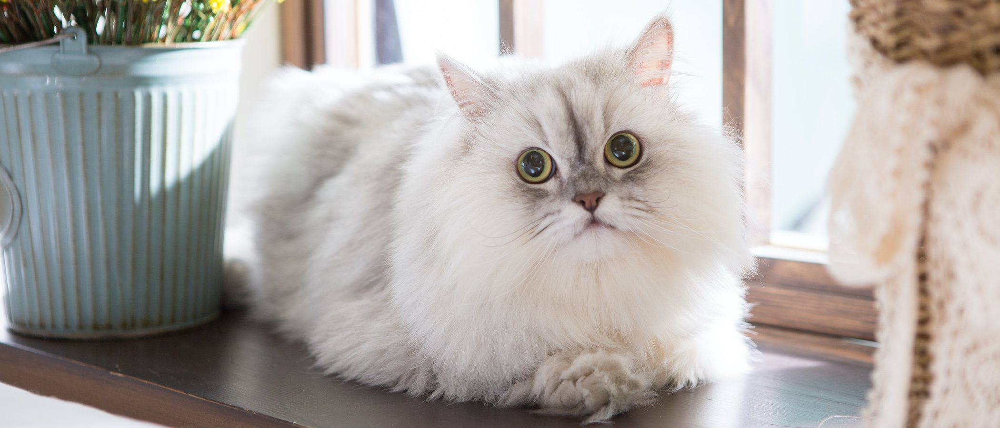

El Persa es una raza de gato caracterizada por tener una cara ancha y plana y un gran abundante pelaje de variados colores. Son considerados comúnmente como gatos aristocráticos (el 75% de los gatos de pedigree registrados son persas). Los primeros gatos persas fueron introducidos en Italia desde Persia (actualmente Irán, Tayikistán y Afganistán) en la década de 1620 y a sus descendientes se les llamó de muchas maneras. La rama persa actual se desarrolló a finales de 1800 en Inglaterra y proviene del gato de Angora turco
